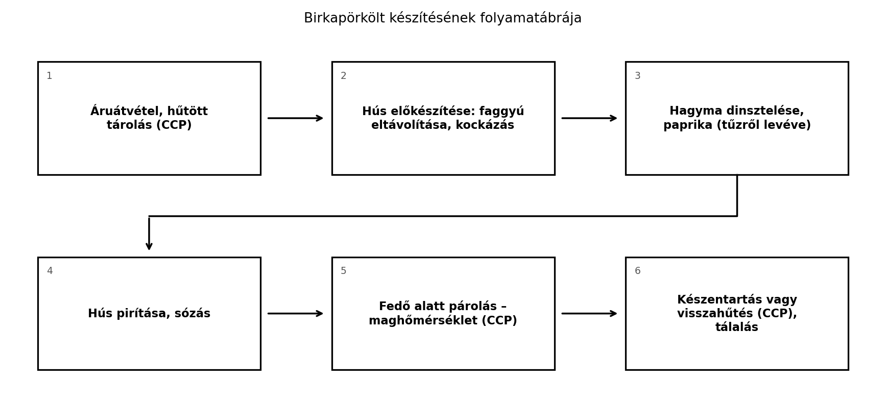

Egy vasárnapi étlapon báránycomb szerepel rozmaringos pecsenyelével, vagy egy rendezvényen bográcsos birkapörkölt készül. A bárány- és ürühús kiváló alapanyag, de ha rosszul választasz hozzá hőkezelési módot, vagy nem kezeled a jellegzetes faggyús ízt, az egész étel kudarc. Ezért kell pontosan ismerned a bárány és az ürü közötti különbséget, a húsrészeket, valamint a hozzájuk illő technológiákat.
Képzelj el egy egészben sült báránycombot, amelynek felszíne aranybarna, illata fokhagymás-rozmaringos. A szakács maghőmérőt szúr a comb legvastagabb részébe: 62 °C-ot mutat (ellenőrizendő: a kívánt készültségi fok szerinti érték). A húst fóliával lazán letakarva pihenteti, mielőtt szeletelné. Ez a pihentetés adja a szaftos végeredményt.
Definíció. Bárány (lamb): fiatal, egy évnél nem idősebb juh. Húsa halvány rózsaszín, finom, enyhébb ízű. Ürü (mutton): ivartalanított, idősebb kos; húsa sötétebb, tömörebb, jellegzetes, erősebb ízű. A köznyelvben gyakran mindkettőt birka szóval jelölik, de szakmailag a két húsféle különbözik.
Szabály. A bárányhúsból egészben sütés és frissen sütés is készülhet, mert húsa zsenge, rövid rostú. Az ürühúsnak erősebb az íze és rágósabb lehet, ezért inkább párolással, pörköltnek vagy ragunak való. Az egészben sütött bárány esetében a fiatal, kicsi, soványabb állat húsa alkalmas; az ürü egészben sütve kiszáradna és íze is túl erős lenne.
Megjegyzés. A bárányhús a magyar konyhában kevésbé elterjedt, mint a sertés vagy a marha, de a nemzetközi és a korszerű konyhákban kedvelt. A magyar birkapörkölt hagyományosan ürühúsból készül, nem bárányból.
Az egészben sütésre a báránycomb és a báránygerinc a legalkalmasabb.
Előkészítés egészben sütéshez
A „vastag faggyú le, vékony fedőréteg marad” határt és a maghőmérő helyét az alábbi képsor mutatja; a képek sorszáma az előkészítés lépéseihez igazodik (2. zsírtalanítás, 3. fedőréteg, 4. tűzdelés és fűszerezés), az 5. kép a sütés közbeni mérést.
A 3. kép a két végletet hasonlítja össze: a teljesen lecsupaszított comb kiszárad, a vastag faggyú viszont erős, faggyús ízt ad. Az 5. képen a maghőmérő a legvastagabb részbe kerül, de nem éri a csontot, mert a csont mellett más hőmérsékletet mérnél. A HTML-kiadásban a lépéseket egyenként lejátszhatod.
Sütés
Báránykaraj (bordák nélkül) és bárányborda (bordacsonttal) a legjobb frissen sütésre.
Eljárás frissen sütéshez
Figyelem. A bárányhús belső hőmérséklete akkor is rózsaszín marad, ha a felszínt erősen megpirítjuk. Nyílt lángon vagy grillen a felület erős hőkezelése csökkenti a felszíni szennyeződés kockázatát, de a belseje nem átsült, ezért sérülékeny csoportoknak (várandós, kisgyermek, idős, legyengült immunrendszerű) csak teljesen átsütve (legalább 75 °C) adható (ellenőrizendő: a NÉBIH útmutatója szerint). A rózsaszín bárány csak ellenőrzött eredetű húsból, a HACCP-terv engedélyével és a vendég tájékoztatásával készíthető.
Birkapörkölt – a magyar pásztorkonyha klasszikusa. Ürühúsból készül, hosszú főzéssel. A húst elő kell készíteni:
Bárányragu hasonló elven készül, de kisebb darabokra vágott bárányhúsból, gyakran sárgarépával, zellerrel, vöröshagymával, paradicsommal és kevés vörösborral. A ragu sűrűbb, mártásszerű, és gyakran tészta vagy rizs körettel tálalják. A bárányraguhoz bármilyen kevésbé nemes húsrész alkalmas (lapocka, nyak, szegy).
Tájjellegű birkaételek. A magyar Alföldön a bográcsgulyás mellett a birkapörkölt a legismertebb, bográcsban, szabadtűzön készítve. A hagyományos receptek gyakran csak hagymát, paprikát, sót és húst használnak, és a húst a saját levében párolják. A pontos tájjellegű változatok neve és összetétele üzemenként eltérhet (ellenőrizendő: helyi receptúra, hungarikumgyűjtemény).
Szabály. A bárányhús fűszerezésére a legerősebb hatású friss fűszernövények: rozmaring, kakukkfű, menta, oregánó, valamint a fokhagyma. Az ürühús jellegzetes ízét további fűszerekkel csökkentjük: fokhagyma, pirospaprika, kömény, majoranna, borókabogyó. A faggyús íz érzetét a zsírtalanítás jelentősen csökkenti.
Eljárás a zsírtalanításra:
Higiénia. A nyers bárány- és ürühús is potenciálisan veszélyes, ezért a nyers és kész étel elkülönítését, a kézmosást és a felületek fertőtlenítését ugyanúgy be kell tartani, mint más húsoknál. A maghőmérőt a vastagabb részbe szúrjuk; a rózsaszínre sütött bárány esetén a felszín hőkezelésének erősnek kell lennie.
Példa. Hány kilogramm báránycombot kell beszerezni 10 adag egészben sült báránycombhoz, ha egy adag sült hús 180 g, és a sütési veszteség (zsugorodás) 28 %?
Adott:
- adagszám:
- adagsúly (sült, kész):
- sütési veszteség:
Keresett: bruttó nyersanyagszükséglet .
Képlet:
A nettó sült tömeg és a bruttó nyers tömeg közti kapcsolat:
Ez a csont nélküli, megtisztított nyers hús tömege. A csontos báránycombnál második lépésként a csont- és tisztítási veszteséget is figyelembe kell venni (tanulási érték: 25 %, ellenőrizendő: üzemi mérés):
Ellenőrzés: Ha 3,33 kg csontos combból 25 % csont- és tisztítási veszteség után 2,5 kg marad, és ebből 28 % elvész a sütés alatt, a maradék 2,5 · 0,72 = 1,8 kg, ami 10 adag 180 g-os adagja. A számítás helyes.
Megjegyzés. Az üzemi receptúrában a veszteség mértéke az adott húsrész, a sütő és a készültségi fok szerint módosul; ezt a kalkulációban mindig az aktuális adatokkal számoljuk.
Adagszám: 10 adag
Adagsúly: 180 g sült hús + 70 ml pecsenyelé
(tálalva)
Allergének: glutén (liszt), zeller, tej (vaj),
kén-dioxid és szulfitok (vörösbor); a barna alaplé/húsleves összetétele
szerint további (ellenőrizd a receptúrát). Minden vendéget
tájékoztatni kell a felhasznált összetevőkről.
| Nyersanyag | Mennyiség 10 adagra | Megjegyzés |
|---|---|---|
| Báránycomb csonttal | 3,3–3,5 kg | bruttó (csonttal, tisztítás előtt); kb. 2 db 1,6–1,8 kg-os comb |
| Só | 25–30 g | |
| Őrölt fekete bors | 5–8 g | |
| Friss rozmaring | 3–4 ág | |
| Friss kakukkfű | 2–3 ág | |
| Fokhagyma | 6–8 gerezd | tűzdeléshez |
| Olívaolaj | 80–100 ml | |
| Vöröshagyma | 200 g | a pecsenyeléhez |
| Sárgarépa | 150 g | a pecsenyeléhez |
| Zeller | 100 g | allergén: zeller |
| Paradicsompüré | 40 g | |
| Vörösbor | 200 ml | |
| Barna alaplé vagy húsleves | 800–1000 ml | |
| Vaj | 50 g | allergén: tej |
| Liszt (BL55) | 30 g | allergén: glutén |
Eszközök és gépek: sütő, maghőmérő, sütőtál vagy tepsi, szűrőkanál, mártásos lábos, kézi habverő, szeletelő kés, vágódeszka.
Előkészítés:
Elkészítés:
Kritikus pontok (CCP):
Készentartás és tálalás: A pihentetett combot a csontról leválasztva, egyenletes szeletekre vágjuk. Tálaljuk rozmaringos pecsenyelével, burgonyapürével vagy sült zöldséggel.
Minőségi követelmények: A hús szeletei rózsaszínűek, szaftosak, a felszínük aranybarna. Illata fokhagymás-rozmaringos. A pecsenyelé selymes, fényes, nem zsíros. A báránycomb szeletei nem szárazak, nem véresek.
Tipikus hibák és javításuk: A báránycomb túlsül és száraz lesz, ha nem mérjük a maghőmérsékletet. A pecsenyelé keserű, ha a paradicsompürét megégetjük. A hús nem szaftos, ha nem pihentetjük.
Változatok: Báránygerinc zöldfűszeres kéregben; báránycomb medvehagymás vajjal.
Cél: A tanuló megtanulja az egészben sült báránycomb előkészítését, fűszerezését, sütését és a maghőmérséklet ellenőrzését.
Eszközök és anyagok: konyhai mérleg, maghőmérő, sütő, sütőtál, éles kés, vágódeszka, fokhagymatűző, sütőkesztyű; báránycomb, fűszerek, zöldségek.
Biztonsági korlát. Ezt a műveletet tankonyhán vagy oktatói felügyelettel gyakorold; otthon csak a leírt biztonsági feltételekkel. A forró sütőtál, a pecsenyelé és a hús hőmérséklete égési sérülést okozhat; mindig használj sütőkesztyűt.
Higiéniai előkészület: Mosd meg a kezed, használj tiszta kötényt. A nyers hús csak a húselőkészítő felületen dolgozható; utána a felületet és az eszközöket fertőtleníteni kell.
Lépések:
Ellenőrzési pontok: Mérd fel a nyers és sült tömeget; számítsd ki a sütési veszteséget százalékban. Figyeld meg a hús színét és állagát a maghőmérséklet függvényében. Ellenőrizd, hogy a pecsenyelé nem égett-e.
Dokumentálás: Vezesd fel a mérési adatokat a jegyzőkönyvbe: nyers tömeg, sült tömeg, maghőmérséklet időpontok, érzékszervi megfigyelések.
Bárányételek általános minőségi követelményei:
Mérhető követelmény: az adagsúly ± 5 %-on belül, a maghőmérséklet a HACCP-terv szerinti érték felett (ellenőrizendő: konkrét érték).
Hiba: A báránycomb kiszárad, rágós.
Ok: Túlsütés, nem mérünk maghőmérsékletet, nincs
pihentetés.
Helyes gyakorlat: Maghőmérő használata, a kívánt
maghőmérséklet betartása, 15–20 perc pihentetés.
Hiba: A birkapörkölt keserű.
Ok: A fűszerpaprikát forró zsíron megégettük, vagy a
hagymát barnára pirítottuk.
Helyes gyakorlat: A hagymát csak üvegesre dinszteljük,
a tűzről lehúzva adjuk hozzá a paprikát.
Hiba: Az ürühús jellegzetes íze túl erős,
zavaró.
Ok: Nem távolítottuk el a faggyút és a hártyákat.
Helyes gyakorlat: Hideg húsról a faggyút és hártyákat
alaposan lefejtjük; a párolásnál a zsírt leszedjük.
Egy étteremben a szakács birkapörköltet készített. A húst kockázta, de a faggyús részeket nem távolította el teljesen. A pörköltet hagymás paprikás alapon, lassú tűzön főzte. A vendég panasza az volt, hogy a szaft kihűlve zsíros, nehéz lett, és a húsnak „öregbirka” íze volt. A séf kivizsgálta: a húsban maradt faggyú, és a főzési idő sem volt elegendő, mert a húsdarabok nem voltak egyenletes méretűek. Tanulság: A birkapörkölt minősége az előkészítésen múlik: a faggyú eltávolítása, az egyenletes kockázás és a hosszú, lassú főzés.
1. feladat (A) Nevezd meg a bárányhús legalkalmasabb hőkezelési módjait és az ürühúsnak leginkább megfelelő eljárást!
2. feladat (A) Sorold fel a bárányhús fűszerezésére használt legfontosabb fűszernövényeket és fűszereket!
3. feladat (B) Rendezd sorba a báránycomb sütésének lépéseit: pihentetés, fűszerezés, maghőmérséklet-mérés, előkészítés, sütőbe helyezés, tálalás. Melyik lépés a CCP?
4. feladat (B) Számold ki, mennyi bárányhúst (bruttó) kell vásárolni 20 adag bárányraguhoz, ha egy adag ragu 120 g kész (párolt) húst tartalmaz, és a párolási veszteség 25 %.
5. feladat (C) Tervezz egy birkapörkölt ételkalkulációt: 10 adagra mennyi ürühús, hagyma, fűszerpaprika, zsiradék kell? Készíts technológiai folyamatábrát (diagram blokkal is leírhatod), és jelöld a kritikus pontot.
6. feladat (D) Hibaelemzés: Egy bárányborda frissen sütése után a hús kívül sötétbarna, belül hideg és véres, a felszín pedig keserű. Mi lehet az ok? Mit javítanál?
Önellenőrzés – válaszok
Hamis. A bárányhúsból készíthetünk rózsaszínre sütött ételeket, de a felszínt erősen meg kell sütni. Sérülékeny csoportnak csak teljesen átsütve (legalább 75 °C) adható. A nyers hús kezelésekor a higiéniai szabályokat be kell tartani.
A bárány fiatal (1 év alatti) juh, húsa halvány, finom ízű. Az ürü idősebb ivartalanított kos, húsa sötétebb, erősebb ízű, rágósabb, ezért párolásra való.
A fűszerpaprika a forró zsiradékban megég, és keserű, kesernyés ízt ad a pörköltnek. A hagymát csak üvegesre dinszteljük, a tűzről lehúzva keverjük bele a paprikát.
A képlet:
.
Adott:
,
.
.
Rózsaszínre sütött báránycombnál 60–62 °C maghőmérséklet (tanulási érték; az üzemi HACCP-terv szerint pontosítandó).
Feladatok megoldása:
1. feladat (A)
Bárányhús: egészben sütés (comb, gerinc), frissen sütés (karaj, borda),
valamint párolás (ragu). Ürühús: elsősorban párolás, pörkölt, ragu;
egészben sütésre nem alkalmas.
2. feladat (A)
Rozmaring, kakukkfű, menta, oregánó, fokhagyma, só, bors. Ürühúshoz:
fokhagyma, pirospaprika, kömény, majoranna, borókabogyó.
3. feladat (B)
Sorrend: előkészítés → fűszerezés → sütőbe helyezés →
maghőmérséklet-mérés → pihentetés → tálalás. A CCP a
maghőmérséklet-mérés és a sütés, mert ez biztosítja a biztonságos
hőkezelést.
4. feladat (B)
Adott: adagszám
,
adagonkénti kész (párolt) hús 120 g, párolási veszteség 25 %.
Kész hús:
.
Nyers hús:
.
Tehát 3,2 kg nyers bárányhúst kell beszerezni.
5. feladat (C)
Példaanyaghányad 10 adag birkapörkölthöz (tanulási adatok):
- ürühús kockázva: 2,0 kg
- vöröshagyma: 400 g
- sertészsír: 100 g
- fűszerpaprika: 30 g
- só: 20–25 g
- fokhagyma: 4–6 gerezd
- zöldpaprika: 200 g
- paradicsom: 200 g
A technológiai folyamat:

A kritikus pontok: a hús hűtött tárolása, a párolás során a hús megfőzése (a főzési idő és hőmérséklet betartása), valamint a készentartás hőmérséklete.
6. feladat (D)
Tünet: kívül sötétbarna, belül hideg és véres, a felszín keserű.
Okok: A serpenyő túl forró volt, ezért a felszín gyorsan megégett
(keserű), míg a hús belseje nem melegedett át. A hús túl vastag volt
vagy hideg került a serpenyőbe.
Javítás: A húst előbb legfeljebb 30 percig, a HACCP-terv szerint
pihentetni, a serpenyőt közepesen erős hőfokon előmelegíteni, a
szeleteket egyenletesen kb. 2–2,5 cm vastagra vágni, és oldalanként 2–3
percig sütni, majd pihentetni. A maghőmérsékletet mérni kell.
A bárányhús fiatal, finom, enyhébb ízű, ezért alkalmas egészben sütésre (comb, gerinc) és frissen sütésre (karaj, borda). Az ürühús idősebb, erősebb ízű, rágósabb, ezért párolással, pörköltként vagy raguként készítjük. A jellegzetes ürühúsízt a faggyú és a hártyák eltávolításával, valamint erős fűszerezéssel (fokhagyma, pirospaprika, kömény, majoranna) csökkentjük. A bárányhús fűszerezésére rozmaring, kakukkfű, menta, fokhagyma illik. Minden hőkezelésnél maghőmérővel ellenőrizzük a készültséget: rózsaszínre sütött báránynál 60–62 °C, átsütve 75 °C (ellenőrizendő: az üzemi HACCP-terv szerint). A birkapörkölt hosszú, lassú párolással készül; a hagymát csak üvegesre dinszteljük, a fűszerpaprikát a tűzről lehúzva adjuk hozzá, hogy ne keseredjen meg. Továbbvitt eredmény: A bárányételek technológiai lapjainak szerkezete és a fűszerezési, zsírtalanítási elvek felhasználhatók a Nagyvadak ételei alfejezet hasonló technológiáinál.